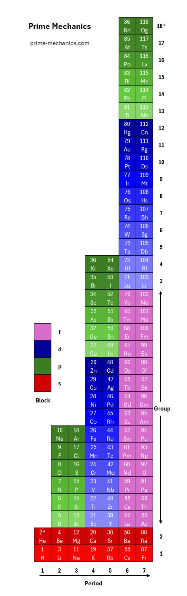
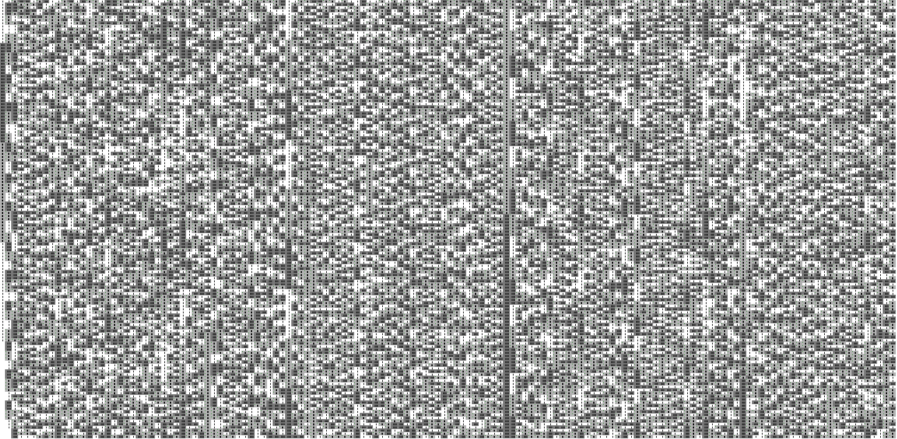
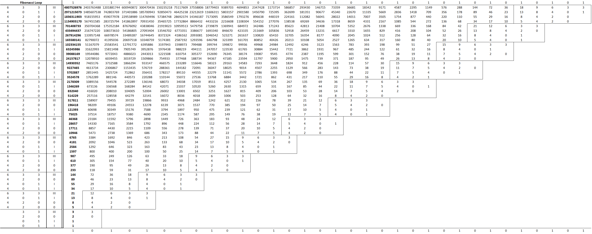

Robert Turley
341 King St.
Charleston, SC 29401
513-293-2085 | rturley39@yahoo.com
Prime Mechanics
Projects
Network
Summary
I'm a creative thinker with a strong passion for learning, design and problem-solving. My career path has taken me from Teaching to Revenue Management to Entrepreneurship. I'd like to utilize my skillset to help my team and others in achieving their long-term goals.
Education
The Ohio State University - Class of 2008
Bachelor of Arts - International Relations; Minor - Spanish
Work Experience
Founder/Developer, Prime Mechanics (Dec 2015 - Present)
Lead development of open-access language partly designed as an alternative to the Real Number system
- Map a new system of notation as a hybrid for programming/non-programming languages
- Expansion from the foundation of PM into mechanical/electrical engineering and architecture
- Designed new periodic table in 2023 through implementation of concepts relating to Prime Mechanics
- Develop as an open-access project to help bridge creative and critical thinking on a global level
Revenue & Reservations Manager, The Dewberry Charleston (Mar 2023 - Present)
Creating and improving upon revenue strategy for one of Charleston’s highest rated luxury-brand hotels
- Designing new reporting tools for an independent property in a top-tier destination market
- Managing a team of six in-house Reservations agents, including two lead agents
- Heading bi-weekly revenue strategy meetings, weekly team meetings and daily reports to ownership
- Implementing pricing, market segmentation, tiered restrictions, rate seasonality and group quotes
Director of Revenue, Interstate Hotels & Resorts (Mar 2018 - Jan 2019)
Remixed business segmentation for the DoubleTree by Hilton Downtown Los Angeles
- Drove marketing and pricing strategy for the hotel through new goals and initiatives
- Managed a small team to handle hotel bookings, inquiries and reporting for Sales and Revenue
- Led strategy meetings involving Regional VPs of Revenue and Sales on weekly calls
- Engaged in discussions with Ownership team on budget, forecasts and market trends
Director of Revenue Management, Millennium Hotels & Resorts (May 2016 - Jan 2018)
Led Revenue strategy for both the Millennium Broadway and The Premier Times Square
- Determined Transient and Group pricing strategies to help shape desired mix of business
- Worked with GM and senior management on long-term goals versus the competitive set
- Point of contact for In-House teams as well as OTA partners for all revenue-related inquiries
- Organized several special projects meant to increase hotel performance and gain market share
Revenue Manager, Pyramid Hotel Group (Oct 2013 - Apr 2016)
Analyzed consumer demand within the LA market to maximize revenue growth for Sheraton Gateway LAX
- Reviewed historical data and forecasted weekly and monthly performance
- Collaborated with Sales and Front Office teams on day-to-day operations
- Managed Reservations team on property and established numerous process improvements
- Gained an introductory understanding of the Hospitality industry at an 802-room airport property
Skills
Technical
- Python | C | SQL | HTML | CSS | JavaScript
- Microsoft Office | Adobe Photoshop | AutoCAD
- VS Code | PyCharm | Arduino IDE | Xcode
Professional
- Leadership | Business Strategy | Market Segmentation
- Budgeting & Forecasting | Marketing | Pricing Optimization
- Customer Engagement | KPI Analysis | Training & Development
Personal
- Expert - Spanish | Beginner - Mandarin | Learning - Hindi, Russian, Arabic, Italian, French, Korean, Japanese, German, Greek
- Violin | Guitar | Piano | Music Composition
- Digital Design | Mathematics | Linguistics
Achievements
- Developed new notion of mathematics - Prime Mechanics - after several years of independent research
- Created alternate Periodic Table in 2023
- Used Prime notation to reveal patterns within several irrational values and sequences, including the Fibonacci sequence
Certifications
Coding Dojo Full Stack Web Developer Bootcamp - Red Belt (Aug - Nov 2022)
Lean Six Sigma White Belt
120-Hour TEFL Certification
Image Gallery


